Spring
기간: 3월부터 5월까지
평균 기온: 대체로 10도에서 15도 사이
- 봄꽃:
- 벚꽃: 벚꽃은 봄의 대표적인 꽃으로, 전국의 공원이나 학교 등에서 쉽게 볼 수 있습니다. 보통 4월 초에 개화하며, 벚꽃이 피는 기간에는 전국적으로 벚꽃 축제가 열립니다.
- 진달래: 진달래는 산지나 들에서 주로 자라는 봄꽃으로, 진달래가 피면 봄이 왔음을 알립니다. 주로 4월에 개화합니다.
- 개나리: 개나리는 봄이 오면 처음으로 만개하는 꽃 중 하나로, 노란 꽃이 예쁘게 피어나 아름다운 풍경을 만들어냅니다.
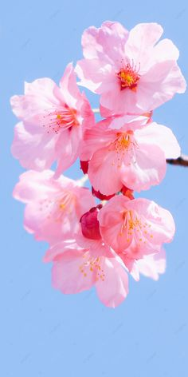
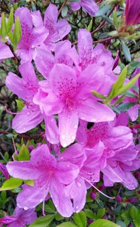
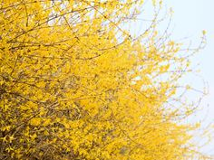
- 봄 활동과 주의사항:
- 산책과 등산: 봄철에는 산책이나 등산 등 야외 활동에 최적인 계절입니다. 특히 벚꽃이 피는 시기에는 벚꽃길을 따라 걷는 것이 인기있습니다. 하지만 봄철 날씨는 변덕스러우므로, 외출 시에는 간절기 옷차림을 준비하고 기온 변화에 대비해야 합니다.
- 야외 활동: 봄철에는 피크닉이나 야외에서의 스포츠 활동 등이 인기가 있습니다. 하지만 봄철에는 꽃가루 알레르기에 주의해야 하며, 야외 활동 시에는 자외선 차단제를 꼭 바르는 것이 좋습니다.
- 꽃구경: 봄철에는 전국의 공원이나 산에서 꽃구경을 즐길 수 있습니다. 벚꽃뿐만 아니라 진달래, 개나리, 철쭉 등 다양한 꽃들이 만개하며 봄의 풍경을 아름답게 꾸며줍니다. 특히 국내외 관광객들이 찾는 진해 벚꽃 축제, 군산 계룡산 철쭉 축제 등이 있습니다.
- 봄나물 채집: 봄철에는 산에서 봄나물을 채집하는 것도 좋은 활동입니다. 하지만 독성 식물에 대한 지식이 없다면, 채집은 전문가와 함께하거나 신뢰할 수 있는 장소에서만 해야 합니다.
Summer
기간: 6월부터 8월까지
평균 기온: 대체로 25도에서 30도 사이
- 여름 꽃
- 해바라기 : 해바라기는 국화과에 속하는 식물로, 7월부터 9월까지 꽃이 피는 것이 특징입니다. 꽃 색상은 주로 노란색이며, 크고 동그란 꽃 모양이 특징입니다.
- 장미 : 장미는 장미과에 속하는 식물로, 6월부터 7월까지 꽃이 피는 것이 일반적입니다. 꽃 색상은 흰색, 노란색, 분홍색, 빨간색 등 다양하며, 꽃잎은 계단 모양으로 둥글게 모여있습니다.
- 히비스커스 : 히비스커스는 아욱과에 속하는 식물로, 7월부터 10월까지 꽃이 피는 것이 특징입니다. 꽃 색상은 주로 빨간색, 핑크색, 흰색이며, 꽃잎은 5개로 구성되어 있습니다.
- 데이지 : 데이지는 국화과에 속하는 식물로, 6월부터 8월까지 꽃이 피는 것이 일반적입니다. 꽃 색상은 흰색, 노란색, 분홍색 등 다양하며, 꽃잎은 얇고 길게 뻗어 있습니다.
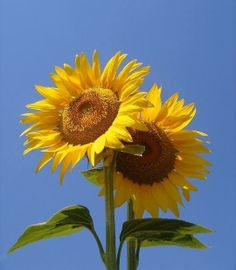
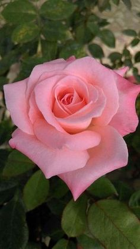
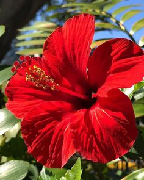
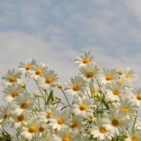
- 여름 활동
- 수영 : 바다, 강 수영장 등에서 물놀이를 즐기는 것은 여름의 재미를 더합니다.
- 캠핑 : 자연 속에서 즐기는 캠핑은 여름밤을 시원하게 보낼 수 있는 좋은 방법입니다.
- 여행 : 여름 휴가를 이용해 국내외로 여행을 떠나는 것도 좋습니다.
- 여름철 주의 사항
- 탈수 : 여름에는 땀을 많이 흘려서 탈수 현상이 일어나기 쉽습니다. 충분한 수분 섭취를 잊지 마세요.
- 햇볕 : 강한 햇볕은 피부에 해롭습니다. 외출 시 선크림을 꼭 바르고 모자나 선글라스를 착용하세요.
- 식중독 : 여름에는 음식이 쉽게 상하기 때문에 식중독에 주의해야 합니다. 음식을 보관할 때 유의하세요.
Fall
기간: 9월부터 11월까지
평균 기온: 대체로 10도에서 20도 사이
- 가을 꽃
- 국화 : 국화는 국화과에 속하는 식물로, 9월부터 11월까지 꽃이 피는 것이 일반적입니다. 꽃 색상은 흰색, 노란색, 분홍색, 빨간색 등 다양하며, 꽃잎은 둥글게 모여있습니다
- 코스모스 : 코스모스는 국화과에 속하며, 9월부터 11월까지 꽃이 피는 것이 특징입니다. 꽃 색상은 주로 흰색, 핑크색, 빨간색이며, 꽃잎은 얇고 길게 뻗어 있습니다.
- 달맞이 꽃 : 달맞이꽃은 밤나무과에 속하며, 9월부터 11월까지 꽃이 피는 것이 특징입니다. 꽃 색상은 흰색이며, 꽃잎은 5개로 구성되어 있습니다.
- 실비아 : 실비아는 꿀풀과에 속하는 식물로, 8월부터 10월까지 꽃이 피는 것이 일반적입니다. 꽃 색상은 주로 흰색, 노란색, 분홍색이며, 꽃잎은 5개로 구성되어 있습니다.
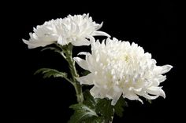
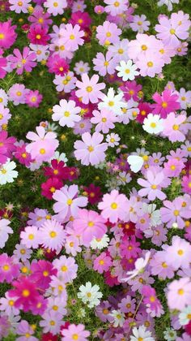
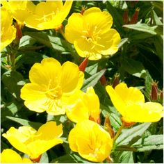
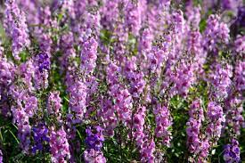
- 가을 활동
- 나들이 : 가을은 날씨가 선선해서 산책이나 등산을 즐기기 좋은 계절입니다.
- 단풍 구경 : 가을에는 단풍이 물들어 아름다운 경치를 즐길 수 있습니다.
- 독서 : 가을은 책을 읽기 좋은 계절로, 조용히 책을 읽으며 휴식을 취하는 것도 좋습니다.
- 가을철 주의 사항
- 감기 : 가을에는 일교차가 크므로 감기에 걸리기 쉽습니다. 옷은 겹겹이 껴입어 감기를 예방하세요.
- 건조함 : 가을은 건조한 계절이므로, 피부 건조를 예방하기 위해 충분한 보습을 하고 물을 많이 마셔야합니다.
- 산불 : 가을에는 산불이 잘 발생하므로, 산에서 불을 지피거나 담배를 피우지 않도록 주의해야 합니다.
Winter
기간: 12월부터 2월까지
평균 기온: 대체로 -5도에서 5도 사이
- 겨울 꽃
- 동백꽃 : 동백꽃은 차나무과에 속하는 상록 관목으로, 11월부터 이듬해의 3월까지 꽃이 피는 것이 일반적입니다. 꽃 색상은 흰색, 분홍색, 빨간색 등이 있으며, 꽃잎은 동그란 모양을 하고 있습니다.
- 매화: 매화는 박목과에 속하며, 매화나무에는 겨울에 꽃이 피는 것이 특징입니다. 꽃 색상은 주로 흰색이며, 꽃잎은 5개입니다.
- 설산화: 설산화는 백합과에 속하며, 본래는 턱받이를 두른 듯한 모양의 꽃잎 구조가 특징입니다. 흰색과 분홍색의 꽃을 피우며, 12월부터 2월 사이에 꽃이 피는 것이 일반적입니다.
- 크리스마스 로즈: 크리스마스 로즈는 매모드세미과에 속하는 다년생 식물로, 겨울에 피는 것이 특징입니다. 꽃 색상은 흰색, 연한 핑크색, 진한 보라색 등 다양하며, 꽃잎은 5개입니다.
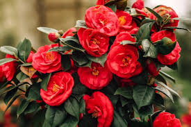
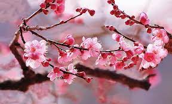
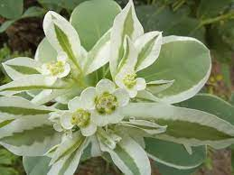
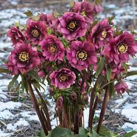
- 겨울 활동
- 스키나 보드 타기: 겨울의 대표적인 활동으로, 스노우보드나 스키를 즐길 수 있습니다.
- 눈싸움이나 눈사람 만들기: 눈이 내리는 날에는 눈싸움이나 눈사람 만들기를 즐길 수 있습니다.
- 겨울 여행: 겨울 풍경이 아름다운 곳으로 여행을 떠나는 것도 좋습니다.
- 온천: 추운 겨울에는 온천에서 몸을 녹이는 것도 좋은 활동입니다.
- 겨울철 주의 사항
- 체온 유지: 추운 겨울에는 체온 유지가 중요합니다. 따뜻한 옷을 입고, 실내 온도를 적절히 유지하세요.
- 미끄러짐: 눈이나 결빙으로 인해 미끄러짐 사고가 발생할 수 있습니다. 이동 시 주의하세요.
- 건조함: 겨울은 건조한 계절이므로, 피부 건조를 예방하기 위해 충분한 보습을 해야 합니다.